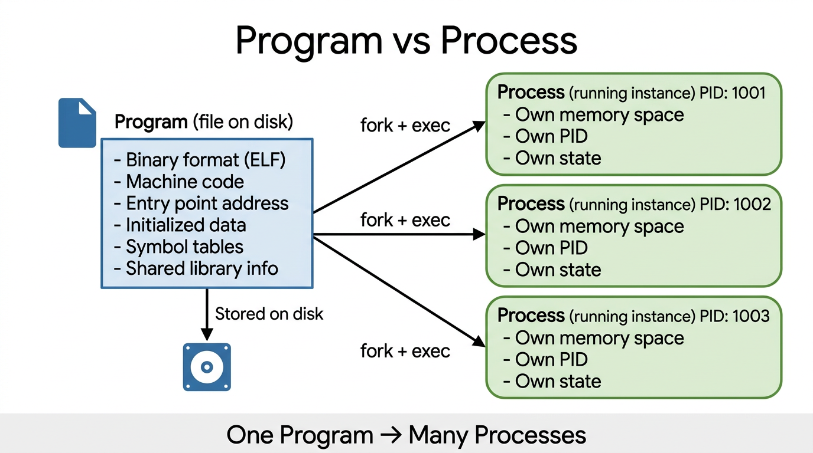
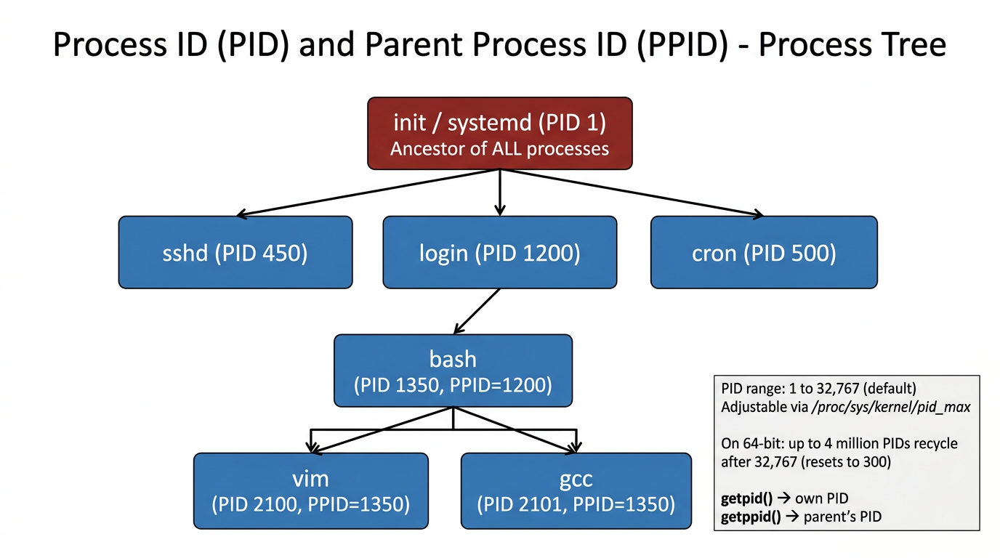
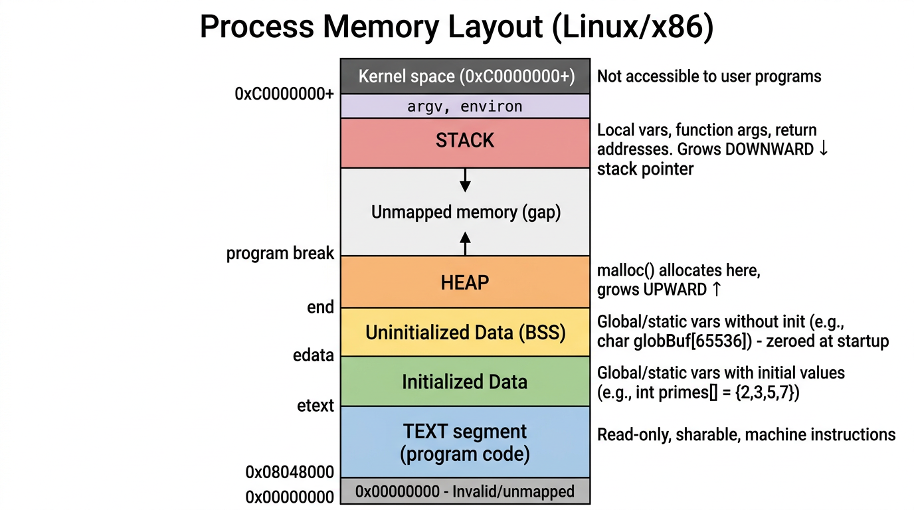
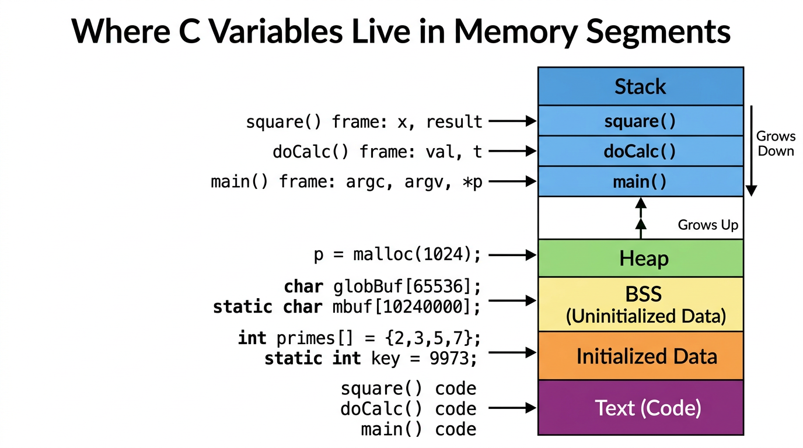
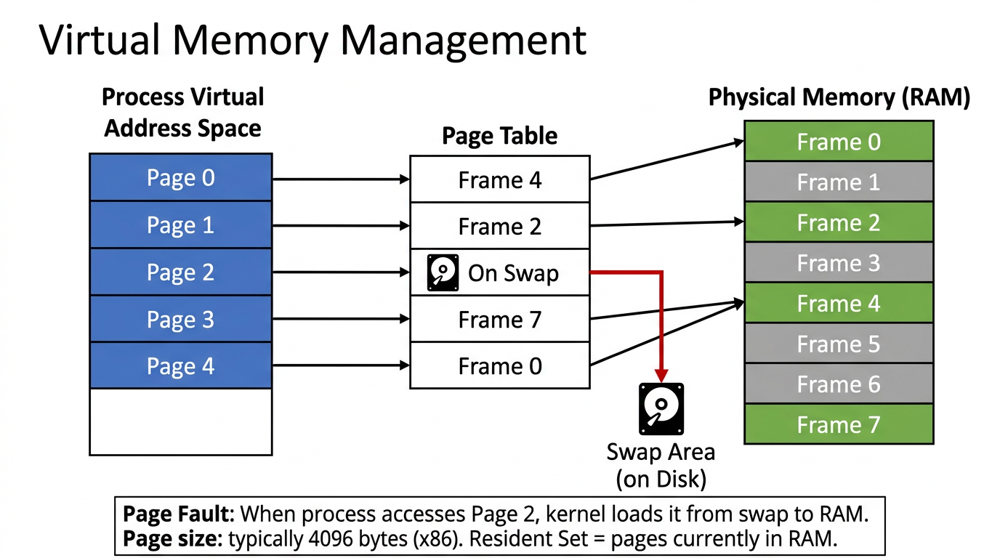
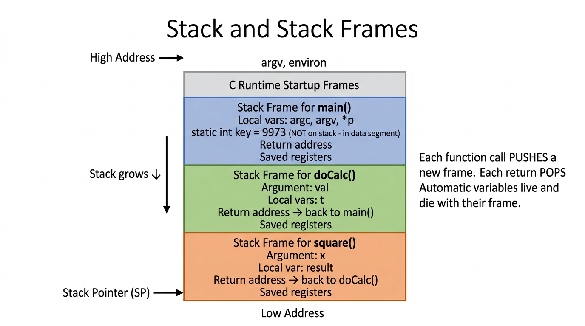
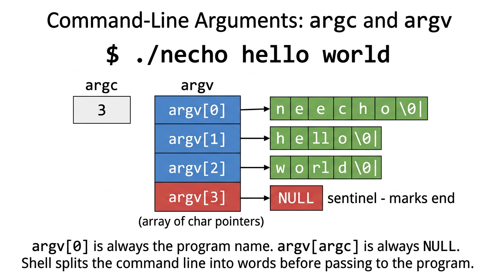
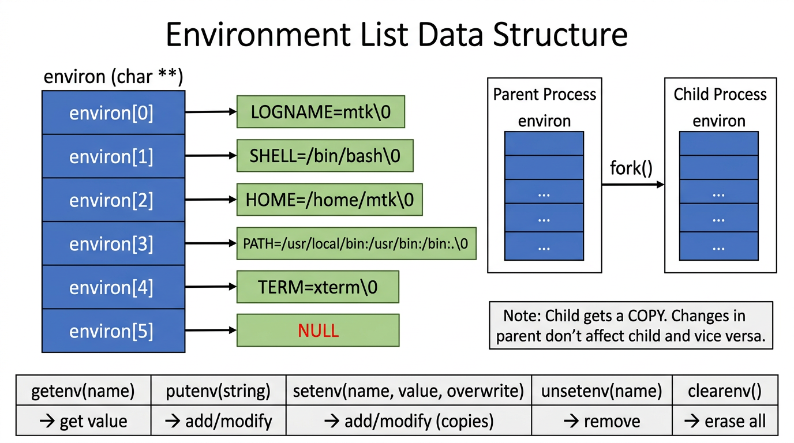
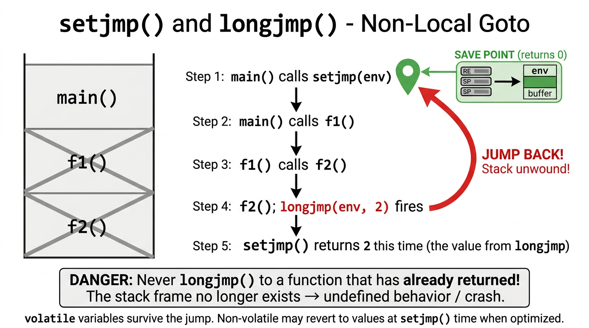

A complete visual guide to how programs become processes, memory layout, virtual memory, stack frames, command-line arguments, environment variables, and non-local gotos.
Understanding the distinction between a program and a process is fundamental to Linux systems programming. A program is a passive file sitting on your disk. A process is that program brought to life — an active, running instance with its own memory, PID, and state.

A program file (typically in ELF format on Linux) contains several types of information that the kernel uses to construct a process at run time:
| Component | Description |
|---|---|
| Binary Format ID | Metainformation describing the executable format. Linux uses ELF (Executable and Linking Format), replacing older a.out and COFF formats. |
| Machine-Language Instructions | The compiled algorithm — the actual CPU instructions that implement the program's logic. |
| Entry-Point Address | The memory address of the first instruction to execute (where _start or main() begins). |
| Data | Initial values for variables and literal constants (strings, numbers). |
| Symbol & Relocation Tables | Names and locations of functions and variables — used for debugging and dynamic linking. |
| Shared Library Info | Lists of shared libraries needed at runtime and the path to the dynamic linker (ld-linux.so). |
$ file /usr/bin/ls /usr/bin/ls: ELF 64-bit LSB pie executable, x86-64, version 1 (SYSV), dynamically linked # On Linux, use readelf to see the ELF header: $ readelf -h /usr/bin/ls | head -10 ELF Header: Magic: 7f 45 4c 46 02 01 01 00 00 00 00 00 00 00 00 00 Class: ELF64 Data: 2's complement, little endian Type: DYN (Position-Independent Executable file) Entry point address: 0x6ab0 # See the symbol table (functions & variables): $ nm /usr/bin/ls | head -5 0000000000012340 T main 00000000000145a0 t do_stat ... # See shared libraries it depends on: $ ldd /usr/bin/ls linux-vdso.so.1 (0x00007ffd...) libselinux.so.1 => /lib/x86_64-linux-gnu/libselinux.so.1 libc.so.6 => /lib/x86_64-linux-gnu/libc.so.6 /lib64/ld-linux-x86-64.so.2
# Run the same program (sleep) three times in the background $ sleep 100 & [1] 46741 $ sleep 100 & [2] 46742 $ sleep 100 & [3] 46743 # All three are separate processes running the SAME program $ ps -p 46741,46742,46743 -o pid,ppid,comm PID PPID COMM 46741 46735 sleep 46742 46735 sleep 46743 46735 sleep # Different PIDs, same program, same parent!
Every process on a Linux system has a unique Process ID (PID) — a positive integer that identifies it.
Every process also has a Parent Process ID (PPID) — the PID of the process that created it.
Together, these form a tree structure rooted at init (PID 1).

C
#include <unistd.h>
pid_t getpid(void); // Returns PID of the calling process
pid_t getppid(void); // Returns PID of the parent process
| Rule | Details |
|---|---|
| Default max PID | 32,767 (adjustable via /proc/sys/kernel/pid_max) |
| On 64-bit systems | Can go up to 222 ≈ 4 million |
| Recycling | After reaching max, counter resets to 300 (not 1), to skip system daemons |
| PID 1 | Always init (or systemd) — ancestor of all processes |
| Orphan adoption | If a parent dies, its children are adopted by PID 1 |
# Current shell's PID and PPID $ echo "My PID: $$" My PID: 46877 $ echo "My PPID: $PPID" My PPID: 45053 # View the process tree $ pstree -p $$ bash(46877)───sleep(47001) # Walk up the ancestor chain $ ps -p $$ -o pid=,ppid=,comm= 46877 45053 /bin/zsh $ ps -p 45053 -o pid=,ppid=,comm= 45053 43370 Cursor Helper $ ps -p 43370 -o pid=,ppid=,comm= 43370 1 Cursor # Process 1 - the root of the tree $ ps -p 1 -o pid,comm PID COMM 1 /sbin/launchd # (init on Linux, launchd on macOS) # Check the PID max (Linux only) $ cat /proc/sys/kernel/pid_max 32768 # Read PPID from /proc (Linux only) $ grep Ppid /proc/$$/status Ppid: 45053
init (PID 1). After that, getppid() returns 1.
When a program is loaded into memory and becomes a process, its memory is organized into distinct segments (also called sections). Understanding this layout is essential for debugging, security, and systems programming.

| Segment | Contains | Properties |
|---|---|---|
| Text | Machine-language instructions (compiled code) | Read-only, sharable between processes running the same program |
| Initialized Data | Global and static variables with explicit initial values (e.g., int primes[] = {2,3,5,7}) |
Read from the executable file when loaded |
| BSS (Uninitialized Data) | Global and static variables without explicit initialization (e.g., char buf[65536]) |
Zeroed by the system before program starts. Not stored on disk — only size is recorded! |
| Heap | Dynamically allocated memory (malloc()) |
Grows upward. Top end called the "program break" |
| Stack | Function call frames (local variables, arguments, return addresses) | Grows downward. Managed automatically via function calls/returns |

C
#include <stdio.h>
#include <stdlib.h>
char globBuf[65536]; /* Uninitialized data segment (BSS) */
int primes[] = { 2, 3, 5, 7 }; /* Initialized data segment */
static int
square(int x) /* Code in text segment */
{
int result; /* Allocated in frame for square() (STACK) */
result = x * x;
return result; /* Return value passed via register */
}
static void
doCalc(int val) /* Code in text segment */
{
printf("The square of %d is %d\n", val, square(val));
if (val < 1000) {
int t; /* Allocated in frame for doCalc() (STACK) */
t = val * val * val;
printf("The cube of %d is %d\n", val, t);
}
}
int
main(int argc, char *argv[]) /* Code in text segment */
{
static int key = 9973; /* Initialized data segment */
static char mbuf[10240000]; /* Uninitialized data segment (BSS) */
char *p; /* Allocated in frame for main() (STACK) */
p = malloc(1024); /* Points to memory in HEAP segment */
doCalc(key);
free(p);
exit(EXIT_SUCCESS);
}
$ gcc -o mem_segments mem_segments.c $ ls -lh mem_segments -rwxr-xr-x 1 user user 49K Apr 5 09:35 mem_segments # Despite having a 10MB array (mbuf) + 64KB array (globBuf), # the executable is only 49K! BSS variables only record their SIZE # on disk. The OS zeroes and allocates the memory at runtime. $ size mem_segments text data bss dec hex filename 1234 16 10305536 10306786 9d4f62 mem_segments # BSS is ~10MB but takes ZERO bytes on disk! # Use nm to see where symbols live: $ nm mem_segments | grep -E "square|main|primes|globBuf" 0000000100008000 D _primes # D = initialized Data 00000001009d0000 S _globBuf # S/B = BSS (uninitialized) 0000000100000598 T _main # T = Text (code) 000000010000067c t _square # t = text (static/local)
The C runtime provides three global symbols that mark segment boundaries:
C
extern char etext, edata, end;
// &etext = end of text segment / start of initialized data
// &edata = end of initialized data / start of BSS
// &end = end of BSS (uninitialized data)
Linux (like all modern operating systems) uses virtual memory. Each process thinks it has the entire address space to itself, but in reality, the kernel maps virtual addresses to physical RAM on-demand. This is one of the most important concepts in operating systems.

Virtual memory works well because programs exhibit two types of locality:
Programs tend to access memory addresses near those recently accessed (sequential instruction execution, array traversal).
Programs tend to access the same memory addresses again soon (loops, frequently used variables).
| Benefit | How It Works |
|---|---|
| Process Isolation | Each process has its own page table pointing to different physical pages. One process cannot read or modify another's memory. |
| Memory Sharing | Multiple processes running the same program share a single read-only copy of the text segment. Page table entries in different processes point to the same physical pages. |
| Memory Protection | Page table entries can be marked read-only, read-write, or executable. The text segment is read-only to prevent accidental self-modification. |
| Abstraction | Programmers and compilers don't need to know the physical layout of RAM. |
| Overcommit | A process's virtual address space can exceed physical RAM. Only needed pages are loaded. |
| More Processes | Since each process uses less RAM (only resident set), more processes can run simultaneously. |
brk(), sbrk(), or malloc()shmat() or detached with shmdt()mmap() or removed with munmap()# Check the page size on your system $ getconf PAGESIZE 4096 # 4096 bytes = 4 KB per page (x86-64 default) # View virtual memory statistics (Linux) $ cat /proc/meminfo | head -10 MemTotal: 16384000 kB MemFree: 2048000 kB Buffers: 512000 kB Cached: 4096000 kB SwapTotal: 8192000 kB SwapFree: 8000000 kB # Compare VSZ (virtual size) vs RSS (resident set size - actually in RAM) $ ps aux --sort=-vsz | head -5 USER PID %CPU %MEM VSZ RSS COMMAND root 1 0.0 0.1 16940 3200 /sbin/init user 1234 5.2 2.0 589200 32000 /usr/bin/python3 # VSZ can be MUCH larger than RSS! # VSZ = total virtual address space (includes swap and mapped files) # RSS = pages actually in physical RAM right now # View a process's memory map (Linux) $ cat /proc/self/maps | head -10 55a2c8000000-55a2c8001000 r--p /bin/cat # text (read-only) 55a2c8001000-55a2c8005000 r-xp /bin/cat # text (executable) 55a2c8005000-55a2c8007000 r--p /bin/cat # read-only data 55a2c8008000-55a2c8009000 rw-p /bin/cat # read-write data 55a2c9000000-55a2c9021000 rw-p [heap] # heap 7ffd40000000-7ffd40021000 rw-p [stack] # stack
The stack is a dynamically growing and shrinking region of memory used for function calls. Each time a function is called, a new stack frame is pushed onto the stack. When the function returns, its frame is popped off. On x86 Linux, the stack grows downward from high addresses toward low addresses.

square(), the stack contains frames for main(), doCalc(), and square(). Each frame holds that function's local variables, arguments, and return address.| Component | Purpose |
|---|---|
| Function Arguments | Values passed to the function (on some ABIs, passed via registers instead) |
| Local Variables | "Automatic" variables that exist only while the function runs |
| Return Address | Saved program counter — where to continue execution after return |
| Saved Registers | CPU register values that the caller needs restored after the function returns |
int result; inside a functionstatic int key = 9973;Each process has two stacks: the user stack (in user memory, what we normally call "the stack") and a kernel stack (in kernel memory, used when the process makes system calls). The kernel stack is small and separate because user memory is untrusted.
ulimit -s).
# Check default stack size limit $ ulimit -s 8192 # 8192 KB = 8 MB default stack size # Run the mem_segments program and see the stack in action $ ./mem_segments The square of 9973 is 99460729 # During execution, the call chain was: # main() → doCalc(9973) → square(9973) # So the stack had 3 frames (plus C runtime startup frames) # When square() returned, its frame was popped # When doCalc() returned, its frame was popped
When you type a command like ./necho hello world, the shell splits it into words and passes them to the program via two arguments to main():
argc (argument count) and argv (argument vector — an array of strings).

./necho hello world, argc is 3 and argv is an array of 4 pointers (3 strings + NULL sentinel).argv[0] is always the program name (or the name used to invoke it)argv[argc] is always NULL — a sentinel marking the end of the arrayargc is always at least 1 (the program name itself)"hello world" is one argument)C
#include <stdio.h>
#include <stdlib.h>
int main(int argc, char *argv[])
{
int j;
for (j = 0; j < argc; j++)
printf("argv[%d] = %s\n", j, argv[j]);
exit(EXIT_SUCCESS);
}
/* Alternative using pointer walk (argv is NULL-terminated): */
// char **p;
// for (p = argv; *p != NULL; p++)
// puts(*p);
$ gcc -o necho necho.c $ ./necho hello world argc = 3 argv[0] = "./necho" argv[1] = "hello" argv[2] = "world" argv[3] = NULL (sentinel) $ ./necho "one argument" two three argc = 4 argv[0] = "./necho" argv[1] = "one argument" # Quotes preserved the space! argv[2] = "two" argv[3] = "three" argv[4] = NULL (sentinel) # Read command-line of any process (Linux): $ cat /proc/self/cmdline | tr '\0' '\n' cat /proc/self/cmdline
Since argv[0] contains the name used to invoke the program, you can create multiple symlinks to the same executable and have it behave differently based on its name. The gzip, gunzip, and zcat commands are all links to the same binary — it checks argv[0] to decide what to do!
# gzip, gunzip, and zcat are often the same binary! $ ls -li /usr/bin/gzip /usr/bin/gunzip /usr/bin/zcat 131072 -rwxr-xr-x 3 root root 98776 /usr/bin/gzip 131072 -rwxr-xr-x 3 root root 98776 /usr/bin/gunzip # Same inode! 131072 -rwxr-xr-x 3 root root 98776 /usr/bin/zcat # Same inode!
There's a maximum total size for argv and environ combined. Check it with:
$ getconf ARG_MAX 2097152 # ~2 MB on most modern Linux systems # This is why "rm *" can fail with "Argument list too long" # when there are too many files!
Every process has an environment list — an array of NAME=value strings that provide configuration information. When a new process is created (via fork()), it inherits a copy of its parent's environment. This is a simple form of interprocess communication.

environ global variable is an array of pointers to NAME=value strings, terminated by NULL. Child processes get a copy — changes don't affect each other.NAME=value pairsenviron global variable (C) points to the array| Function | Purpose | Notes |
|---|---|---|
getenv(name) | Get value of a variable | Returns pointer to value string, or NULL |
putenv(string) | Add/modify a variable | Takes "NAME=value". Does NOT copy — the string becomes part of the environment! |
setenv(name, value, overwrite) | Add/modify a variable | Copies name and value. Safer than putenv. If overwrite=0, won't replace existing. |
unsetenv(name) | Remove a variable | Removes all definitions of the named variable |
clearenv() | Erase entire environment | Sets environ = NULL. Can cause memory leaks with setenv. |
C
#include <stdio.h>
#include <stdlib.h>
extern char **environ;
int main(int argc, char *argv[])
{
char **ep;
for (ep = environ; *ep != NULL; ep++)
puts(*ep);
exit(EXIT_SUCCESS);
}
C
#define _GNU_SOURCE
#include <stdlib.h>
#include <stdio.h>
extern char **environ;
int main(int argc, char *argv[])
{
int j;
char **ep;
clearenv(); /* Erase entire environment */
for (j = 1; j < argc; j++)
if (putenv(argv[j]) != 0) /* Add command-line args as env vars */
perror("putenv");
if (setenv("GREET", "Hello world", 0) == -1) /* Add GREET if not set */
perror("setenv");
unsetenv("BYE"); /* Remove BYE if it exists */
for (ep = environ; *ep != NULL; ep++)
puts(*ep);
exit(EXIT_SUCCESS);
}
# View current environment $ printenv | head -5 LOGNAME=mtk SHELL=/bin/bash HOME=/home/mtk PATH=/usr/local/bin:/usr/bin:/bin:. TERM=xterm # Set and export a variable $ export MY_VAR="Hello Linux" $ echo $MY_VAR Hello Linux # Child process inherits parent's environment $ bash -c 'echo "Child sees MY_VAR=$MY_VAR"' Child sees MY_VAR=Hello Linux # Set a variable for just ONE command (doesn't affect parent shell) $ GREETING="Bonjour" bash -c 'echo "GREETING=$GREETING"' GREETING=Bonjour $ echo "GREETING=${GREETING:-not set}" GREETING=not set # Parent was unaffected! # Remove a variable $ unset MY_VAR $ echo "MY_VAR=${MY_VAR:-not set}" MY_VAR=not set # Read environment of any process (Linux): $ cat /proc/self/environ | tr '\0' '\n' | head -5 # Using the modify_env program: $ ./modify_env "GREET=Guten Tag" SHELL=/bin/bash BYE=Ciao GREET=Guten Tag SHELL=/bin/bash # Note: BYE was removed, GREET used the provided value $ ./modify_env SHELL=/bin/sh BYE=byebye SHELL=/bin/sh GREET=Hello world # Note: BYE removed, GREET defaulted to "Hello world"
putenv("NAME=value") does NOT copy the string — it adds the pointer directly to the environment. If the string is a local variable on the stack, it will become dangling when the function returns! setenv() copies both name and value, making it safer.
C's goto only works within a single function. But sometimes you need to jump out of a deeply nested function call back to a higher-level function (e.g., for error handling). setjmp() and longjmp() provide this nonlocal goto capability.

setjmp(env) saves the current state (program counter, stack pointer, registers) into env buffer and returns 0longjmp(env, val) restores the state from env, making it look like setjmp() returned again — but this time it returns val (the value you passed to longjmp)C
#include <setjmp.h>
int setjmp(jmp_buf env);
// Returns 0 on initial call
// Returns nonzero on return via longjmp()
void longjmp(jmp_buf env, int val);
// Never returns! Jumps back to setjmp() location
C
#include <stdio.h>
#include <stdlib.h>
#include <setjmp.h>
static jmp_buf env;
static void f2(void) {
printf(" In f2() - about to longjmp(env, 2)\n");
longjmp(env, 2);
}
static void f1(int argc) {
printf(" In f1() - argc=%d\n", argc);
if (argc == 1) {
printf(" In f1() - about to longjmp(env, 1)\n");
longjmp(env, 1);
}
f2();
}
int main(int argc, char *argv[]) {
switch (setjmp(env)) {
case 0: /* Initial setjmp() call */
printf("Calling f1() after initial setjmp()\n");
f1(argc);
break;
case 1:
printf("We jumped back from f1()!\n");
break;
case 2:
printf("We jumped back from f2()!\n");
break;
}
exit(EXIT_SUCCESS);
}
# Run WITHOUT arguments - jumps from f1() $ ./longjmp_demo main() starts [setjmp returned 0 - initial call] Calling f1()... In f1() - argc=1 In f1() - about to longjmp(env, 1) [setjmp returned 1 - jumped back from f1()!] main() ends # Run WITH an argument - goes through f1() to f2(), jumps from f2() $ ./longjmp_demo x main() starts [setjmp returned 0 - initial call] Calling f1()... In f1() - argc=2 In f2() - about to longjmp(env, 2) [setjmp returned 2 - jumped back from f2()!] main() ends
When a compiler optimizes code, it may store local variables in CPU registers instead of RAM. When longjmp() restores the registers saved by setjmp(), those optimized variables get reverted to their values at setjmp() time. The fix: declare critical variables as volatile.
C
#include <stdio.h>
#include <stdlib.h>
#include <setjmp.h>
static jmp_buf env;
static void doJump(int nvar, int rvar, int vvar) {
printf("Inside doJump(): nvar=%d rvar=%d vvar=%d\n", nvar, rvar, vvar);
longjmp(env, 1);
}
int main(int argc, char *argv[]) {
int nvar;
register int rvar; /* Hint: put in register if possible */
volatile int vvar; /* NEVER optimize this variable */
nvar = 111;
rvar = 222;
vvar = 333;
if (setjmp(env) == 0) { /* Checkpoint saved here */
nvar = 777;
rvar = 888;
vvar = 999;
doJump(nvar, rvar, vvar);
} else { /* After longjmp() lands here */
printf("After longjmp(): nvar=%d rvar=%d vvar=%d\n",
nvar, rvar, vvar);
}
return 0;
}
# WITHOUT optimization: all variables keep their updated values $ cc -o setjmp_vars setjmp_vars.c $ ./setjmp_vars Inside doJump(): nvar=777 rvar=888 vvar=999 After longjmp(): nvar=777 rvar=888 vvar=999 # All 777/888/999 ✓ # WITH optimization (-O2): non-volatile variables REVERT! $ cc -O2 -o setjmp_vars_opt setjmp_vars.c $ ./setjmp_vars_opt Inside doJump(): nvar=777 rvar=888 vvar=999 After longjmp(): nvar=111 rvar=222 vvar=999 # ^^^ ^^^ ^^^ # REVERTED! REVERTED! SURVIVED! # (int) (register) (volatile) # # nvar and rvar reverted to their values at setjmp() time (111, 222) # vvar (declared volatile) correctly retained 999!
if, switch, while! operator in a controlling expression== 0, != 0)s = setjmp(env); — this is NOT standards-conformant!
volatile to prevent compiler optimization issues. Consider using sigsetjmp() and siglongjmp() (Section 21.2.1) in signal handlers.
| Concept | Key Takeaway |
|---|---|
| Program vs Process | A program is a file on disk. A process is a running instance with its own PID, memory, and state. One program can create many processes. |
| PID / PPID | Every process has a unique PID (1 to 32,767+) and knows its parent's PID. All processes form a tree rooted at init (PID 1). Use getpid() and getppid(). |
| Memory Layout | Process memory has 5 segments: text (code), initialized data, BSS (zeroed), heap (grows up via malloc), stack (grows down via function calls). BSS saves disk space by not storing zeros. |
| Virtual Memory | Each process has its own virtual address space mapped to physical RAM via page tables. Only needed pages are in RAM (resident set). Others are on swap. This provides isolation, sharing, and protection. |
| Stack Frames | Each function call pushes a frame (args, locals, return address). Return pops it. Automatic variables die with their frame; static variables persist. Stack overflow = too many frames. |
| argc / argv | Command-line arguments arrive as argc (count) and argv (NULL-terminated array of strings). argv[0] is always the program name. |
| Environment | NAME=value pairs inherited from parent (copy). Access via environ, getenv(), setenv(), putenv(), unsetenv(). Changes don't propagate back to parent. |
| setjmp / longjmp | Nonlocal goto: setjmp() saves a checkpoint (returns 0), longjmp() jumps back to it (returns nonzero). Unwinds the stack. Use volatile to protect variables from optimization. Avoid when possible. |
# === Process Information === $ echo $$ # Current shell PID $ echo $PPID # Parent PID $ ps aux # All processes $ ps -p 1234 -o pid,ppid,vsz,rss,comm # Specific process details $ pstree -p # Process tree with PIDs $ cat /proc/sys/kernel/pid_max # Max PID value (Linux) $ cat /proc/PID/status # Detailed process status (Linux) $ cat /proc/PID/maps # Memory map of a process (Linux) $ cat /proc/PID/cmdline # Command-line arguments (Linux) $ cat /proc/PID/environ # Environment variables (Linux) # === Program Inspection === $ file /usr/bin/ls # File type (ELF format info) $ readelf -h program # ELF header $ readelf -S program # ELF sections $ nm program # Symbol table $ ldd program # Shared library dependencies $ size program # Segment sizes (text, data, bss) $ objdump -d program # Disassemble # === Memory & System === $ getconf PAGESIZE # Virtual memory page size $ getconf ARG_MAX # Max argv+environ size $ ulimit -s # Stack size limit (KB) $ free -h # RAM and swap usage $ cat /proc/meminfo # Detailed memory info (Linux) # === Environment === $ printenv # Show all env vars $ echo $VARIABLE # Show one var $ export VAR=value # Set and export $ unset VAR # Remove variable $ VAR=val command # Temporary env for one command $ env # Show env (or run with modified env)
mem_segments.c and check its size with ls -l. Although it has a ~10 MB array (mbuf), the executable is tiny. Why? Answer: mbuf is uninitialized (BSS). BSS doesn't store data on disk — only records the size needed. Memory is allocated and zeroed at runtime.
setenv() and unsetenv() using getenv(), putenv(), and direct environ manipulation. Your unsetenv() should remove ALL definitions of a variable (there may be duplicates).